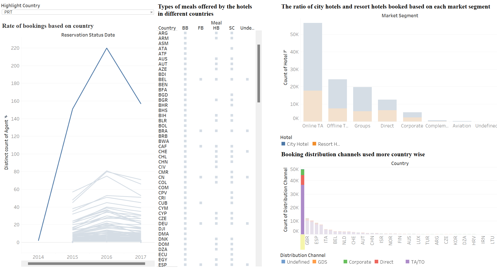

Demand Of Hotel Bookings
Indiana University-Purdue University, Indianapolis, IN 46202, USA
Shruti Mukadam, Alero Jakpa, Bala Akhil Rajdeep Battula, Lakshmi Revathi Gogineni
Design Document- Hotel Booking Demand
Introduction
The goal of our visualization is to provide insight into what a hotel manager or owner (Hotelier) or owner might need from a hotel. We designed our analysis from 3 main aspects- People Behavior, Hotel Demands, as well as Country Analysis, and Market segmentation based on 2 main types of Hotels- City Hotels and Resort Hotels.
People's behavior describes categories of people such as adults, babies and children. Repeated Guest versus new guest. Room assignment based on booking.
Hotel Demands show the difference between City and Resort Hotels. Cancellations versus booked.Meal types offered.
Country Analysis and Market Segmentation reveals where customers are coming from and how they tend to make their bookings.
Data Description
We used a hotel booking dataset from Kaggle (Mostipak, J. 2020). The dataset has 32 columns with over 100,000 rows ranging from year 2015-2017. Data contains the type of hotels (City & Resort hotels), and other booking types preferred by people.The data is collected from different countries and can be hence analyzed in a better way to understand the overall ratio of bookings in different countries and people visiting them. Following is a snapshot of the features and type of data.

Design Choices
We initially created a dashboard for each aspect and approached the project from a user perspective. As a traveler, this information may be insightful to plan the next vacation. A traveler may want to know the most popular type of hotels, the amenities offered, prices as well as the best time or the most popular time to travel.
We first tried to work on designing the graphs individually to analyze the data, and then modified some of the designs for the final dashboard. Following are the 3 different categories the dataset was divided into, and then we worked on it to create some initial design for the final dashboard.
People behavior

Hotel Characteristics

Country Analysis and Market Segmentation

Design Process
We observed that there was too much information in each section which will have required three dashboards to consume the information without creating clutter. Therefore, we went for a similar approach. We collected the important information from each section and combined it into one why answering the same proposed question in our draft.

Design Outcome
Overall Approach
We landed on designing Hotel Booking Demand from the perspective of a Hotelier. Starting with a map, a Hotelier will understand customer reach and market segmentations. Followed by hotel characteristics, then unto customer types and behavior. We leveraged the use of interactivities and tooltips are important to provide more context and explanation of other elements.
Furthermore, we leveraged the use of sequential ,divergent, and quantitative color mappings. For example, Sequential mapping was used in maps to indicate booking counts of different countries. Divergent mapping was used to show city versus resort hotels. And quantitative mappings were used to differentiate between people types (adults, children, babies). Finally, we simulated our visualization with color oracle and determined that a color blinded Hotelier will be able to understand the use of colors and graphs on the visualization.
People Behavior
- People behavior analysis shows that most people book city hotels compared to resort hotels. People tend to visit and book hotels most likely on weekdays and less on weekends. The ratio between adults, babies and children shows that adults are the ones’ booking the hotels and their stay rate is more.
- Based on guests, we also found that new guests visiting the hotels are more likely to book the hotels again. Guests typically start arriving more from months March, April and the mostly in May, also in August, September, and a higher number in the month of October.
- If we filter month & year wise then the percentage of guests visited more in September 2015, October 2016, and May 2017. The analysis also shows the type of customers (group, transient, transient party) who have not paid the deposit money.
Hotel Characteristics
- Our analysis shows that City Hotels are the most popular type of hotel compared to Resort Hotels. Hotels get their highest revenue in the month of August followed by July and the lowest in November and December.
- An interesting find is that during the December period, hotel prices pick up. The reservation status of checked-in with respect to canceled follows the same curve. The higher the check-in rate, the greater the cancellation rate and vise-versa.
- Booking hotels on weeknights is more popular than booking on weekend nights. Most guests booking hotels are new guests versus repeated guests.
Country Analysis and Market Segmentation
- The Map visuals show that Portugal has the most number of agent bookings and is also the most visited country. People generally opt for the Online TA market segment as compared to the others.
- We can also analyze different types of meals offered by the hotels within different countries.
- Booking distribution channels such as corporate, GDS, Direct, TA can be identified based on the country filter, the general distribution channel used largely is TA/TO by most of the countries.
- It is interesting to note that for direct bookings, Resort Hotels are more popular than City Hotels.
Improvement Opportunities
- We decided to use Tableau rather than D3 because it is easier to use and does not require an extensive amount of developer hours. But Tableau felt short when it came to data load performance, user experience interactions, and the limited amount of visualizations compared to D3.
- It was challenging to perform collaboration designs. We were not able to merge our dashboard so we had to redesign one dashboard to contain all designs.
References
Mostipak, J. (2020, February 13). Hotel Booking Demand. Kaggle. Retrieved December 12, 2022, from http://www.kaggle.com/datasets/jessemostipak/hotel-booking-demand
Contribution
Shruti Mukadam | - Team Creation
- Discovery of research topic
- Writing questions to analyze the data
- Initial dashboard design of People behavior
- Meetup with TA to discuss the initial design
- Designing people behavior dashboard
- Design of final documentation
|
Alero Jakpa | - Team Creation
- Discovery of research topic
- Planning and coordination of team activities
- Design draft contribution
- Initial dashboard design of Hotel Characteristics
- Design of finalized dashboard
- Design of final documentation
|
Bala Akhil Rajdeep Battula | - Discovery of research topic
- Design draft contribution
- Ideation and troubleshooting of the visualizations
- Embedding the design document
- Video walkthrough of visualization
|
Lakshmi Revathi Gogineni | - Initial dashboard design of Country Analysis and Market Segmentation
- Developing the individual sheets of each segment to answer all the questions in the proposal
- Design of finalized dashboard
- Design of final documentation
- publishing it on Tableau Public Server
|